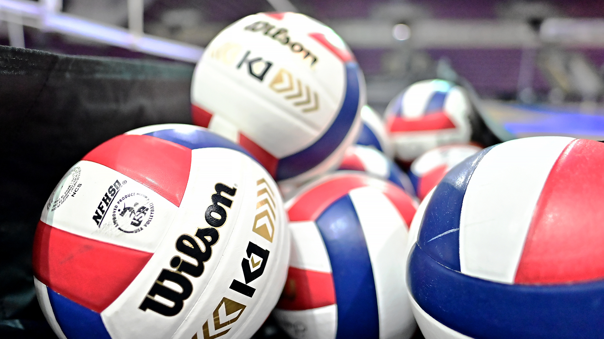

My After-School Activites!

Sports! Who doesn't do sports? Sports are the most common after school activity in the US. I play volleyball. Most girls do. I play at an academy called Pure Energy. I'm in a 14U National 2 team so that means we go to Nationals around mid-June. I'm #11 on my team. We call my coach Sid because were a really chill academy. Our main rival is Wildfire in which we play aganist with sportsmanship but we always try to one-up them.
My dog loves playing volleyball with me and my dad. We even got him his own volleyball. If someone touches Bryson's volleyball, it's over for you. He will whine and cry until he either gets his ball or you start playing with him.
